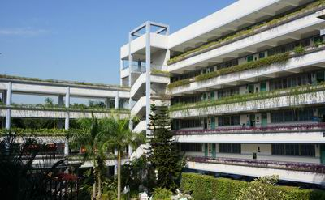

莲花中学位于深圳市中心区莲花山畔，1991年7月建校，2002年1月以高分通过广东省一级学校评估，成为深圳市福田区第一所省一级初级中学。莲花中学北校区位于深圳市福田区莲花二村内，南校区位于深圳市滨河大道5034号，南北两校区，共占地面积41032.2平米，现有教学班60个。学校的办学质量一直稳定在高位运行，办学的社会效益得到了教育主管部门和社会的高度认可和广泛赞誉。学校先后获评为“全国学校文化优秀奖”、“国家级语言文字规范化示范学校”，“全国射箭重点学校”、“广东省科研先进单位”、“广东省一级学校”、“广东省中小学校长培训实践基地”、“广东省中小学教师培训基地”、“广东省巾帼文明示范岗”、“广东省创建精神文明先进单位”、“广东省现代教育技术实验学校”、“广东省绿色学校”，两次被评为“深圳市办学效益先进学校”和“深圳市先进单位”。

学校领导班子进行科学的人性化管理，营造和谐民主的氛围，着力把学校营建成师生的精神家园。全校教职工精诚团结，锐意进取，以忘我的精神和创造性的工作取得了一项又一项辉煌业绩。如今，学校的三个年级都各自拥有一支团结奉献、兢兢业业、勇于创新的教师队伍。教师们在各级各类比赛中也屡获殊荣。
在学生发展方面，学校以“一切为了每一位学生的发展”为核心理念，德育工作选取了名人教育为切入点，通过系列的文化活动对学生进行潜移默化的教育，为他们选择正确的生活道路奠定了坚实的基础。在教学上做到人性化地关注每个学生，努力摸索出“分层教学，因材施教”的成功做法，调动学生学习积极性，实现自主学习、自主发展。同时，学校积极推行课程改革，长期开设学生个性自主发展课程，涉及艺术、科学、体育等多个门类50余种，为学生个性特长发展提供了优越的条件，也使学生的整体素质得到了全面的提高。
回顾过去，莲中人倍感自豪；展望未来，更觉任重道远。在二十余年的办学实践中所形成的优良办学传统和厚实的学校文化，使学校实现了发展教师、成就学生、服务社会的多赢效益。莲花中学将以“关注师生生命质量，拓展师生发展空间”为核心，在学校管理、德育工作、课程设置、师资队伍建设、学校文化建设、后勤服务等方面精心谋划，以是否有利于师生发展为衡量标准，努力建设现代型学校，实现学校内涵的新发展。
北校区地址：深圳市福田区莲花二村 电话83329314
南校区地址：深圳市滨河大道5034号，电话：82956504